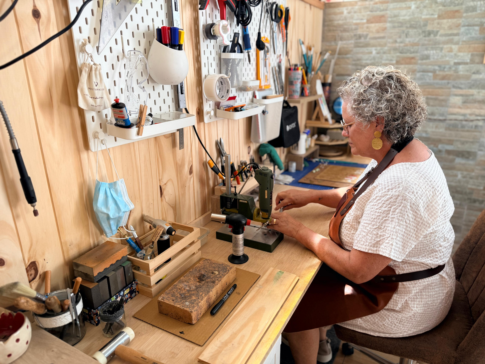
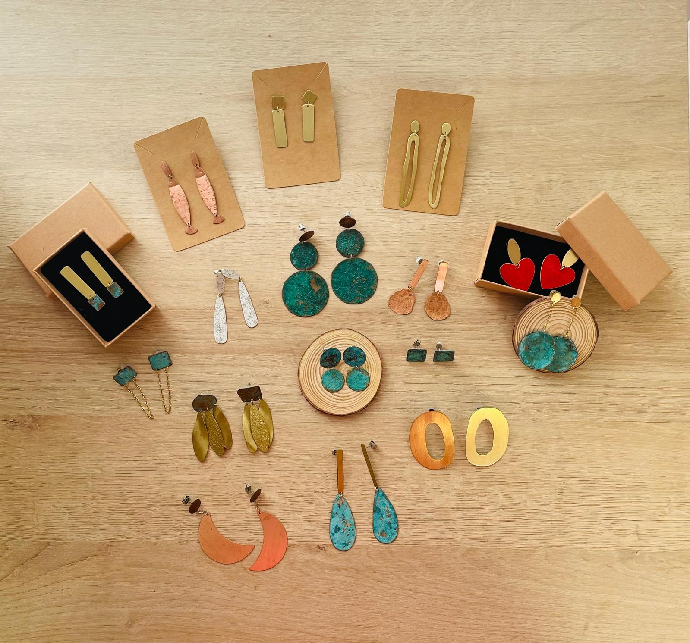

Preguntas frecuentes
Aquí tienes respuestas a las dudas más habituales sobre pedidos, pagos, envíos, devoluciones y el cuidado de las piezas. Si no encuentras lo que buscas, escríbenos y te ayudamos.


¿Las piezas son hechas a mano?
Sí. Cada joya de ArtesaniaBrass está elaborada artesanalmente por Rosa Alonso en latón y cobre, con acabados cuidados uno a uno.
¿Qué formas de pago aceptáis?
Puedes pagar con tarjeta desde la web, por Bizum o por transferencia bancaria. En Bizum y transferencia el pedido queda registrado y lo confirmamos cuando recibamos el pago.
¿Cuánto tarda el envío?
El plazo depende de si la pieza está lista o se elabora para ti. En general, prepararemos y enviaremos tu pedido lo antes posible y te mantendremos informada por email o Instagram. Puedes ver los plazos con más detalle en la página de envíos.
¿Hacéis envíos a toda España?
El pago automático en la web es para península y Baleares, con envío gratis. Para Canarias, Ceuta, Melilla u otros países calculamos el envío a mano: escríbenos y te pasamos el presupuesto antes de cobrar. Más información en envíos.
¿El envío está incluido en el precio?
En península y Baleares, sí: el envío va gratis con el pago online. En el resto de destinos el porte se calcula a parte según la dirección; no hay un precio fijo automático. Consulta las condiciones en envíos.
¿Puedo devolver o cambiar una pieza?
Si la pieza no te encaja o hay algún problema, contacta con nosotras lo antes posible. Revisaremos cada caso para ofrecerte la mejor solución. El proceso completo está explicado en devoluciones.
¿Cómo cuido mi joya de latón o cobre?
Evita el contacto prolongado con agua, perfumes y cremas. Guárdala en un lugar seco y límpiala con un paño suave. Con el tiempo el metal puede adquirir una pátina natural; forma parte de su carácter. Tienes consejos más detallados en el cuidado de tu joya.
¿Las piezas son aptas para pieles sensibles?
Trabajamos en latón y cobre. En algunas personas estos metales pueden oscurecer la piel o causar molestias. Si tienes la piel muy sensible o alergias conocidas a ciertos metales, escríbenos antes de comprar y te orientamos.
¿Todas las piezas son iguales a las de las fotos?
Al ser piezas hechas a mano, puede haber pequeñas variaciones de forma, textura o tono respecto a las fotos. Eso forma parte del carácter artesanal de cada joya.
¿Hacéis encargos personalizados?
Sí, podemos valorar encargos a medida. Cuéntanos tu idea por email o Instagram y te diremos si es posible y cómo sería el proceso.
¿Cómo puedo contactaros?
Escríbenos a info@artesaniabrass.es, llámanos o escríbenos por WhatsApp al +34 610 266 411, o síguenos en Instagram @artesania.brass.
¿Sigues con dudas? Mira también envíos, devoluciones o el cuidado de tu joya, o contacta con nosotros y te respondemos encantadas.